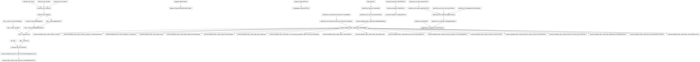

autowisp.database.user_interface module
Class Inheritance Diagram

Define interface to the pipeline database.
- autowisp.database.user_interface._get_config_info(version, step='All')[source]
Return info for displaying the configuration with given version.
- autowisp.database.user_interface._get_db_conditions(db_session)[source]
Return dict of condition IDs containing sets of expression IDs.
- autowisp.database.user_interface._parse_json_config(json_config)[source]
Organize the given JSON configuration to parameters and conditions.
- Parameters:
json_config – JSON configuration to be parsed. Formatted as a decision tree, where the path through the tree defines the combination of condition expressions that must be satisfied and the leaf at the end specifies the value for the parameter .
- Returns:
- parameter name: [
- {
‘expressions’: set(expression ID index in below list),
’value’: value of parameter if all expressions are satisfied
},
…
]
- [str]:
list of expression strings
- Return type:
- autowisp.database.user_interface._save_conditions(configuration, expression_db_ids, db_session)[source]
Create new conditions encounted in configuration and add their IDs.
- autowisp.database.user_interface._save_expressions(expressions, db_session)[source]
Save new expressions to database and update configuration with DB IDs.
- autowisp.database.user_interface.add_camera_type_channels(camera_type_id, properties, db_session)[source]
Add channels to the given camera type and return partial channel entries.
- Parameters:
camera_type_id (int) – The ID of the camera type to which to add channels.
properties (dict-like) – The information being changed for the survey. For each channel to add there should be exactly two keywords:
"channel-{channel_id}-name"and"channel-{channel_id}-slice". Where{channel_id}should be either an int specifying the identifier of the channel in the database or"new"specifying a new channel to add.{channel_id}``entries should be unique (for example only one new channel can be added). Channel slices have the format: ``"{x_offset}:{x_step};{y_offset}:{y_step}". Anything not related to channels is ignored.db_session – The database session to use for updating.
- Returns:
The channel ID and property (one of
"name"or"slice") which is not fully specified or is mal-formatted. If more than one, the one wit the lowest ID is returned. If the new channel is unspecified, the channel returned isNone. If everything is fully specifiedNone, Noneis returned.- Return type:
- autowisp.database.user_interface.apply_master_config(master_settings)[source]
Apply user-supplied master settings to the default step / master info.
This is the pure-Python core of what the BUI uses to take the user’s chosen master configuration and produce the
step_dependencies/master_infoarguments forautowisp.database.initialize_database.initialize_database().- Parameters:
master_settings –
Mapping keyed by
"master-<type>-<param>", with values:"<type>-enabled":"always"or an int-as-string ("0"to disable,"1"to enable)."<type>-split","<type>-match": iterables of header expressions.
Both plain
dictand DjangoQueryDictare accepted; the list-valued keys are read via.getlist(...)when available and otherwise viamapping[key].- Returns:
deep copies of the
database.defaultsvalues with disabled masters pruned and themust_match/split_bysets replaced frommaster_settings.- Return type:
tuple of (step_dependencies, master_info)
- autowisp.database.user_interface.export_survey_to_json(destination, **limit_to)[source]
Create JSON file storing selected survey information.
- autowisp.database.user_interface.get_db_configuration(version, db_session, step_id=None, max_version_only=False)[source]
Return list of Configuration instances given version.
- autowisp.database.user_interface.get_editable_attributes(db_class)[source]
List the user-editable attributes for the given component DB class.
- autowisp.database.user_interface.get_human_name(column_name)[source]
Return human friendly name for the given column.
- autowisp.database.user_interface.get_json_config(version=0, step='All', **dump_kwargs)[source]
Return the configuration as a JSON object.
- autowisp.database.user_interface.get_processing_sequence(db_session, no_lc_postprocessing=False)[source]
Return the sequence of (step, image type) the pipeline can run.
- Parameters:
db_session – The database session to issue queries.
no_lc_postprocessing (bool) – If True, any steps which are blocked by
create_lightcurvesare not included.
- autowisp.database.user_interface.get_progress(step, *args, **kwargs)[source]
Return info about completed work ona given step.
- autowisp.database.user_interface.get_progress_images(step_id, image_type_id, config_version, db_session)[source]
Return number of images in final state and by status for given step/imtype.
- Parameters:
step – Step instance for which to return the progress.
image_type – ImageType instance for which to return the progress.
config_version – Version of the configuration for which to report progress.
db_session – Database session to use.
- Returns:
- Information on the images in final state. The
entries are channel name, example status (>0 indicates success <0 indicates falure), number of images of that channel that have that status sign and are flagged final.
- [str, int]: Information about the images not in final state. The
entries are channel name, number of non-final images of that channel.
- [str, int, int]: The pending images broken by status. The format is
the same as the final state information, except for images not flagged as in final state for the given step.
- Return type:
- autowisp.database.user_interface.get_progress_lightcurves(step_id, image_type_id, config_version, db_session)[source]
Same as get_progress_images() but for lightcurve steps.
- autowisp.database.user_interface.import_json_to_survey(json_file)[source]
Add to the survey configuration from given JSON encoding string.
- autowisp.database.user_interface.list_channels(db_session)[source]
List the combine set of channels for all cameras.
- autowisp.database.user_interface.main()[source]
Run the import or export action specified on the command line.
- autowisp.database.user_interface.master_config_json_to_settings(json_obj)[source]
Translate a
master_config.jsonstructure into master settings.The JSON has the shape
{master_type: {"enabled": ..., "split": [...], "match": [...]}, ...}, wheremaster_typeis"zero","dark","flat", etc. The returned mapping uses"master-<type>-<param>"keys for every(type, param)pair iterated over by the BUI –master_infois the canonical iteration order, with bothhighflatandlowflatcollapsed ontoflatso the keys produced here match what the BUI’s session storage uses.
- autowisp.database.user_interface.parse_command_line()[source]
Return the parsed command line configuration.
- autowisp.database.user_interface.parse_config_overwrites(lines)[source]
Parse plain-text configuration lines into an overwrites dict.
Each non-blank, non-comment, non-section line is parsed as
keyorkey = value(:is also accepted as the separator). Trailing#comments are stripped.;is not a comment marker – semicolons in unquoted values are preserved as data. Quoted values keep their inner content (the surrounding quotes are removed). Section headers ([name]) and blank lines are skipped.Keys that are never valid as DB parameter overrides are silently dropped, mirroring what the BUI’s
static/home/js/create.project.jsdoes before populating the textarea:project-home(the project directory itself) andsplit-channels(generated from camera information). The list is a subset of whatautowisp.database.initialize_database.StepCreatoralready refuses to insert as a Parameter row.- Parameters:
lines – Iterable of strings, one per config line. Trailing newlines are tolerated.
- Returns:
Suitable for the
overwrite_default_configargument ofautowisp.database.initialize_database.initialize_database(). Keys without a value are stored asNone.- Return type: